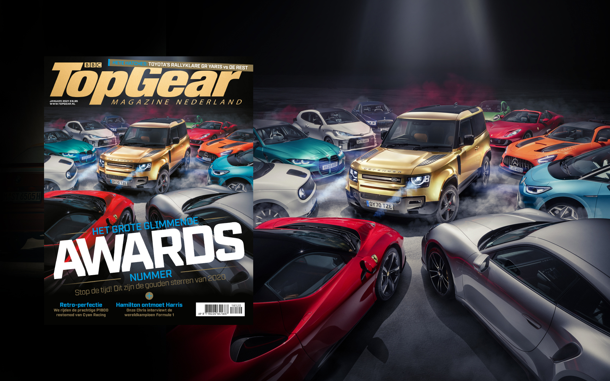
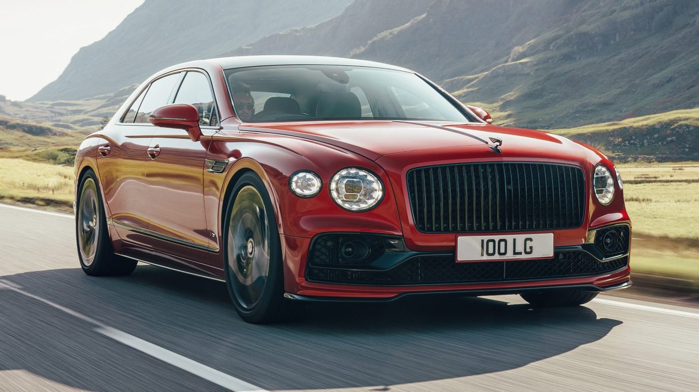

autonieuws / ferrari / Deze Ferrari 575 GTC Stradale is straatlegaal
Deze Ferrari 575 GTC Stradale is straatlegaal
En hij staat in Nederland te koop
Mattijn Nederend
Foto('s): Noël van Bilsen
Ergens na de eeuwwisseling boerde het bedrijfje Prodrive heel aardig met de inmiddels iconische Ferrari 550 GTS. Deze raceauto bouwde Prodrive zonder ondersteuning van Ferrari, maar dat wil niet zeggen dat het Italiaanse merk niet geboeid zat mee te kijken. Toen de 575M Maranello arriveerde in 2002, besloot Ferrari voort te boorduren op het succes. Ze kwamen met de 575 GTC, een raceauto die klanten konden gebruiken in het FIA GT Championship. De Ferrari 575 GTC was het product van Ferrari Corse Clienti en N. Technology. De spoorbreedte groeide, de uitlaatgassen gingen aan de zijkanten naar buiten, plaatwerk werd vervangen door lichtgewicht composiet, een sequentiële bak deed het schakelwerk en naast nog heel wat extra delen maakte de achterspoiler het af. Niet onbelangrijk: de 5,7-liter V12 werd opgeboord tot een 6,0-liter en het vermogen groeide naar zo’n 600 pk.
DIT IS EEN FERRARI 575 GTC STRADALE
Wat je hier ziet, is geen Ferrari 575 GTC. Wel is het een Ferrari 575M die voor een groot deel is omgebouwd tot GTC door het Nederlandse Classic Youngtimers Consultancy. Ze noemen hun creatie de Ferrari 575 GTC Stradale, waarbij die laatste toevoeging erop duidt dat het, jawel, een straatauto is. De widebody is aanwezig, net als de koolstofvezel spoilers en splitters. De uitlaten schieten naar opzij, de koplampen zijn omgebouwd en binnenin plaatsten ze een rolkooi. Het interieur is vrijwel volledig van koolstofvezel en op maat gemaakt voor dit project. De motor van de Ferrari 575 GTC Stradale is eigenlijk het enige dat niet werd aangepakt. Al heb je met een 5,7-liter V12 met 515 pk toch weinig te klagen, dachten we zo. De prijs is 195.000 euro, exclusief belastingen. Hij staat wel al op Nederlands kenteken, dus je hoeft niet nog langs een keuringsstation met die grote achtervleugel.
Lees meer over
- FERRARI 575
- FERRARI
- AUTONIEUWS
- ITALIË
- S-SEGMENT
- TUNING
MEER HIEROVER
-
GTO Engineering
ABONNEREN
-

TopGears abonnementen
REACTIES
Geef een reactie
HET NIEUWSTE VAN TOPGEAR
AUTONIEUWS
-

Deze auto's kan Mariah Carey kopen van kerstinkomsten
Als jij 'All I Want For Christmas Is You' had gezongen, had jij
TEST
-

Rolls-Royce Ghost
Rijden met de compleet nieuwe Rolls-Royce Ghost
VIDEO'S
-

Singer ACS walkaround
Alles wat je wilt weten over de offroad Porsche van Singer
MAGAZINES
-
Januari 2021
Tijd voor de jaarlijkse prijsuitreiking